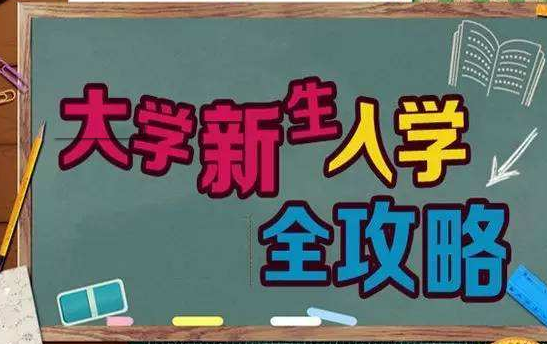
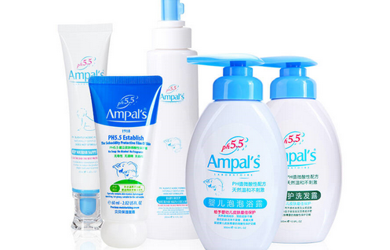
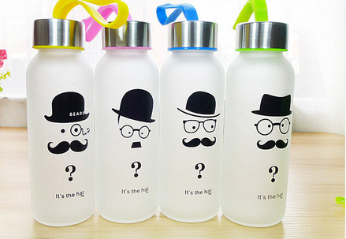
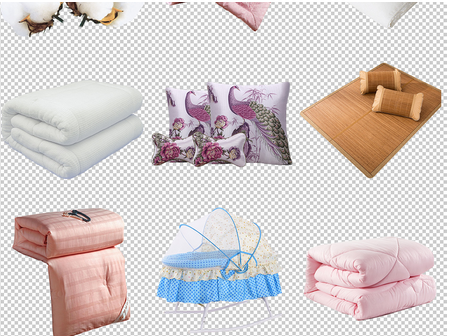
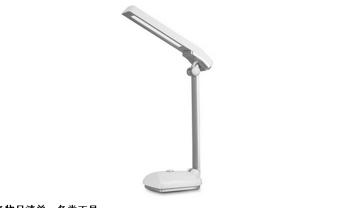
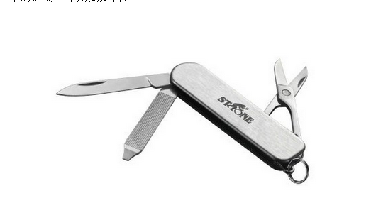

据说是有不少人想要这份清单！其实除了录取通知书等那几个必带的外，其它可以自行考虑带不带。以下提到的物品只是必备，不是必带，除了第一类必带物品，其他东西觉得麻烦也可以到了之后再买，认为对自己有帮助的就快快收藏哦~

01、必备物品
1.录取通知书，高考准考证，成绩单。
2.户口本复印件（把户主和自己的那页印在同一张A4纸上，复印多点，留底，因为留底可以在学校这边复印。）
3.身份证及其复印件（记住复印件是正反两面，身份证一定要带。身份证不要随意借给别人，万一他拿你身份证去开信用卡，哭死你。）
4.团档案，学生档案（学生档案一定要带！！至于团档案，没进团的自然没有，有的一定要带）
5.现金，大概500元吧。然后生活费你可以自己先开一张银行卡存进去带到学校，也可以直接带过去，不过要小心，钱财一定要小心。身份证和银行卡不要放一起。生活费可以先带个2000-3000，用得差不多时让父母汇款。钱财要自己小心，不可外露。切记切记。生活费这方面，其实就看你父母了，要一次性带够也行。
6.一寸照，12张。大一寸，4到6张吧。一寸照带多点，开学各种需要，你参加社团学生会也用到。至于红底还是蓝底，随便你。
7.手机及附件（这个不用我说了吧）。照相机（有照相机可以带去，记录你的大学生活）。（其他数码产品，想带就带，不想带随便。然而那些有单反啊平板电脑啊，也是会带过来的吧，注意收好。）
02、生活用品
1.喝水的杯子（可以泡麦片、冲感冒冲剂的那种），还有一种杯子，就是可以带到课室的那种保温杯之类的杯子（军训特别需要啊，不喝水会死。可以稍微放点食盐）。
2.牙刷（据说一个月就要换一次牙刷，因为上面积累了很多细菌了）、牙膏、刷牙用的杯子。小镜子（男生也要带镜子啊，不带哭死你），梳子（没什么好说的）。
3.毛巾两至三条（可以再带一条用过的毛巾，进去要擦床板什么的），洗脸盆，桶。（肇庆校区的，那天学校路口会有很多卖洗脸盆啊桶啊什么的，可以那个时候买，就是质量不怎么样，很薄，看你们取舍吧）。
4.肥皂。洗发水。洗衣粉或洗衣液，洗衣刷，洗洁精。（自己看着办吧）
5.蚊帐，空调被,凉席（同样可以在那边买），夹子（夹蚊帐的夹子，还有夹便条的金属夹），枕头，棉被，被单。
6.湿巾（军训时候特别需要）。
7.台灯（可带可不带）。
8.筷子，勺子，饭盒。（唉，我说清楚了，然后这个就别问了，食堂会有餐盘和餐具，在食堂吃完把餐盘餐具放到指定地点就可以走了。你也可以带饭盒去打饭。食堂有提供塑料袋盛饭，可以打回宿舍吃。环保起见，在食堂吃吧。然后带饭盒是为了偶尔打饭回宿舍吃，或者吃泡面用的。错过钟点也可以吃泡面解决。宿舍备点面包之类的，这样下雨天不想去食堂的话嗯嗯。）
9.拖鞋一双，球鞋一双（体育课要穿球鞋，这是安全起见），休闲鞋一双，袜子N双。女生的想带高跟鞋就带吧（师兄友情提醒下，穿高跟鞋很伤脚踝，一般那些女性是工作时候才穿，逛街？逛街穿高跟鞋是在和自己过不去。还有穿完高跟鞋脱掉后，建议按摩下脚，活络一下血液。在校区见过一个170多的女生穿高跟鞋，身高已经完灭我了，再穿高跟鞋，直接秒杀众多男生。）
10.衣架（可以多带点，下雨天什么的，舍友什么的），粘勾（床边墙上粘勾，挂挂衣服）
11.吹风机（这应该是违规用品。但是好像多少百瓦以下可以用）。
12.洗面奶护手霜等护肤品（反正我是这一类都没带），女生的化妆品。
13.男生的剃须刀（嗯哼，不打算留胡子搞艺术的，带）。
14.钱包，针线盒（有人跟我说男生不带这种东东吧，嗯哼，你要是出去玩不小心把衣服弄破，用不用？在校区时我的缝衣针借给别人，借给很多次，后来丢了，后来我求救于同乡会一个女生。不要这样看着我，我是男的。）
15.小剪刀，胶水，双面胶、透明胶若干。指甲钳（不怕你不用到）。小锁头和钥匙（因为宿舍有衣柜，有抽屉。不要问宿舍怎么样，自己找精品贴看去。）水果刀（吃苹果要削皮。有个小窍门告诉你们一下，洗水果那层皮时可以弄点食盐在掌心洗，会洗去很多脏东西。食盐用处很大，想了解的百度。）
16.创可贴、眼药水、晕车药等小药品，自己觉得暂时不用也可以不带（晕车的同学要带晕车药，我就认识一个晕车的女同学）。近视的要带眼镜（别说你只带眼镜不带眼镜盒）。面巾纸。折叠伞（下雨天用到。还有就是怕晒的女生用到。其实说实话军训可以晒黑你三层）。
17.夏季衣服三套。冬季衣服两至三套。卫衣、外套的什么随便带。冬衣暂时用不到，国庆有回家的可以那个时候回家带。还有冬衣不想带的，肇庆校区可以去天宁北路买。天宁北路有蓝宫商城什么的。蓝宫是女生的天下。蓝宫商城对面是品牌店，那是高富帅白富美的天下。本部的有龙洞步行街。不过我大一在校区。还有自己想带的什么衣服，能带都随便你。
18.特产，有的话可以带点过去，和舍友共享。
03、学习物品
1.笔及笔芯若干。
2.书包，笔记本三本左右，订书机、订书钉，便利贴若干。这些也可以等你到学校后再去网购，反正一时用不到。笔记本不用买太多，大学用的笔记本，都是薄薄的单行本，就像小学时用的那种差不多。
3.英语单词小本，记住，一定要背单词，每天就算复习十个单词也要坚持下去！特别是基础不要的同学！
4.可以带一两本喜欢的书。基本上只要不是太专业的书，图书馆都有。
5.娱乐的可以带棋牌、随身运动器材、口琴、萧、吉他等等。
6.最后特别说一下电脑吧。大一要不要带电脑？个人建议是大一下学期带。计科系的、要当班长的、学生会干部（部长级）的，带，当班长很多东西要用到电脑，秘书部要写策划书。其他的，建议上学期不要带。电脑课作业可以在机房做。机房一个小时多少钱忘了，反正比网吧便宜。对了，在校区，机房是期末必争之地，因为有空调可以在里面学习。至于个人为什么不建议大一上学期带电脑呢？大一上学期，大把的时间，上大学的迷茫，要是你投进电脑，那完了。这个时间段，交多点朋友，嗯，用心交，或者看多点书，特别是校区的，一个人多去逛逛，想想接下来怎么做，因为那个时候肯定很迷茫，一个人多想想。说回来为什么大一上学期不要带电脑呢，无非是那个时间段你很迷茫，不要把时间花在电脑上（很多人是把电脑当游戏机、影碟机、上网工具，各种刷微博聊QQ，别不承认。），这个时候要多和别人交流，多看书（课外的），多自己一个人想想，多到外面走走看看这滚滚红尘花花世界（女生要结伴）。 电脑这一条，你可以当我是胡说，有的话，想带就带吧，然后不要去实体店买电脑，最好去京东之类的有信誉的大电商买，要买自营类的，不然很容易被坑。你知道坑你买一台电脑能赚多少钱吗？
04、大学新生必备物品清单：洗护用品类
牙刷；牙膏；漱口杯；毛巾；（吸水要好）（相应的要买挂绳或挂钩）
洗面奶；护肤品；（男生也适当备点）
洗发水；（大瓶划算，也可备一个小瓶，去澡堂的时候担子轻点）沐浴露；（同上）沐浴球，擦澡毛巾之类；
剃须刀；（男生必备，胡子拉茬的给人印象不好）盆子（选能摞在一起的，节省占地空间，别让寝室太拥挤）；
开水瓶2个（不要太精致抢眼，容易被盗；外壳质量一定要好，不然万一砸了烫伤了美腿可就不好了）
抹布；香皂或洗手液；洗衣皂（别打算四年都用洗衣粉洗衣服，长此下去，你的手大概就不用见人了）；
肥皂盒（不要买小了，一个放香皂，一个放洗衣皂）；塑胶手套；（女生最好能习惯戴手套洗东西）
桶（鄙人暂时是没怎么用到，就用来放没来得及洗的脏衣服了）衣领净或漂白剂（以备不时之需）
刷子；（洗鞋用）钢丝球；（进新寝室发现前人不够讲卫生，水池有很多顽渍时；吃了泡面等食物的饭盒不想洗，一放就几天时用）
P.S.去澡堂洗澡记得多带几个塑料袋，便于把干衣服、湿衣服、沐浴用品等分开放。

05、大学新生必备物品清单：衣物类
衣服（四季的外套、内衣、袜子等。非外地同学或能一个月左右回家一次，当天的衣物可以先不带）；
鞋子，拖鞋，皮带；衣架（两札）；（根据各自衣服的不同买不同质量的衣架）
晒衣夹（一排）；（额用它主要是夹住衣架和晒衣绳，防止衣服吹跑的）
可以晒很多袜子的环形衣架；
大夹子；（晒被子时候用）晒衣服的撑杆；挂钩若干（可以贴墙的）；
樟脑球一类的防蛀防霉物品；（不要一次放太多，不然衣服穿出来熏死人了）
发夹，橡皮筋（军训还想披头发？热不死你！）镜子，梳子；
各种SIZE的盒子（装杂七杂八的小东西，节省空间又方便找）；
06、大学新生必备物品清单：饮食类
喝水杯、水瓶；（不怕摔的最好，军训用自己的水杯装水）
饭盒（主要是有时候要泡面用，食堂有一次性饭盒，你不会带它去食堂的）
筷子（食堂也有，额说过，是为了泡面的时候用哈，决心泡面的同志记得再带瓶洗洁精）
削皮刀、水果刀；
勺子（吃半个小西瓜的时候用得着）
榨菜、老干妈、醋、果酱等调味品（食堂的东西不一定好吃，醋也是兑了好多水的。这个随意啊）
牛奶、饼干、小面包等开袋即食的东西。（建议低糖低盐低脂高纤的）

07、大学新生必备物品清单：住宿和文具类
蚊帐；枕头；凉席；棉絮；
两张被单；枕套；
被子（最好除了一床冬天盖的棉被还有个空调被或蚕丝被，不然棉被多了你可能没地方放）（装被子的袋子也带去）；小板凳；
笔（黑笔必备，开学填很多表有用）（开学可能没有时间去买，学校超市也未必有自己习惯用的牌子的）
随身带的小记事本（很多东西辅导员、老师都只讲一遍，大学的事情远比中学复杂，要记下来才不容易忘）
MP4/5或U盘（COPY老师的课件和交作业等时候要用到，最好不要用MP4/5直接拷，学校电脑的病毒很猖狂）
电子辞典（平时阅读什么都要用到，同时配备一对可充电电池更佳，英语专业的就免了，就乖乖地备一本牛津字典吧）
手表（考试不准开手机）

08、大学新生必备物品清单：出行和小电器&电子产品类
手机（不说你也不会忘的哈）手机充电器；
护眼台灯；床头灯；闹钟；（用手机闹也行）小台扇；
电吹风、电饭煲，电热水壶（这些大功率电器是不让带的，所以大家不要带了，抓大就处分，不值）
数码相机；（随时记录大学生活精彩点滴；参加活动的图像资料以后在交简历、写实践报告的时候附上会很有帮助，贵重物品，注意保管）
电脑及配件；（这个大一有些学校是不让带的，所以还是忍忍吧！）
雨伞；（不要光求漂亮，质量要好）遮阳伞；包包；（大大小小的，自己看着办）
钥匙扣；（挂宿舍和抽屉钥匙用）当地的地图和公车路线图；（可以到学校了买）
家里的钥匙（不然突然想回家了却进不了家门）
自行车（学校大的可以考虑这个可以考虑，附近挺偏的，自行车还是蛮方便的）
各物件的发票和保修单；（如果有全国联保的话）

09、大学新生必备物品清单：各类工具
指甲剪；剪刀、小刀；
锁（锁衣柜，其余个数酌情，带电脑的锁电脑主机）；
多用插座1个；（也就是接线板，上面至少要有两孔、三孔合四个以上）
手电筒、应急灯；（以备断电后可以继续做自己的事）
电池（手电用的，MP4/5用的，电子词典用的，酌情购买）；
针线包（以后要靠自己了，军训裤子破了、裤腰大了用得着）；
透明胶、502、双面胶、大圈的透明胶等；
绳子；（用来挂毛巾，发新书的时候也用得着，大学发新书不是在教室，是自己大老远领了搬回寝室的）
打火机（女生也得带上，以防不时之须）；
书夹；（把书立起来的那种夹子，高考助手大家用过的）
十字、一字小螺丝刀；
小锤子、钳子等；（不时之需，不用到处借）
